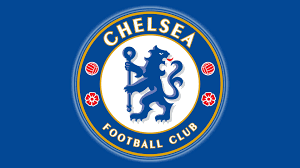
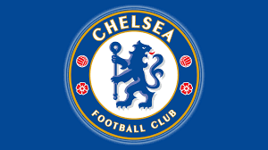

Conmebol
Copa America
2021


Neymar Jr
A blog is an online journal or informational website displaying information in reverse chronological order, with the latest posts appearing first, at the top.

Lionel Messi
A blog is an online journal or informational website displaying information in reverse chronological order, with the latest posts appearing first, at the top.

Cristiano Ronaldo
A blog is an online journal or informational website displaying information in reverse chronological order, with the latest posts appearing first, at the top.

Paulo Dybala
A blog is an online journal or informational website displaying information in reverse chronological order, with the latest posts appearing first, at the top.

Mesut Ozil
A blog is an online journal or informational website displaying information in reverse chronological order, with the latest posts appearing first, at the top.

Mauro Icardi
A blog is an online journal or informational website displaying information in reverse chronological order, with the latest posts appearing first, at the top.

Di Maria
A blog is an online journal or informational website displaying information in reverse chronological order, with the latest posts appearing first, at the top.

Kylian Mbappé
A blog is an online journal or informational website displaying information in reverse chronological order, with the latest posts appearing first, at the top.

Harry Kane
A blog is an online journal or informational website displaying information in reverse chronological order, with the latest posts appearing first, at the top.

Kevin De Bruyne
A blog is an online journal or informational website displaying information in reverse chronological order, with the latest posts appearing first, at the top.

Philippe Coutinho
A blog is an online journal or informational website displaying information in reverse chronological order, with the latest posts appearing first, at the top.

Neymar Jr
A blog is an online journal or informational website displaying information in reverse chronological order, with the latest posts appearing first, at the top.

VS

TIME- 20:30 PM
Watch Match
Top Clubs
 
